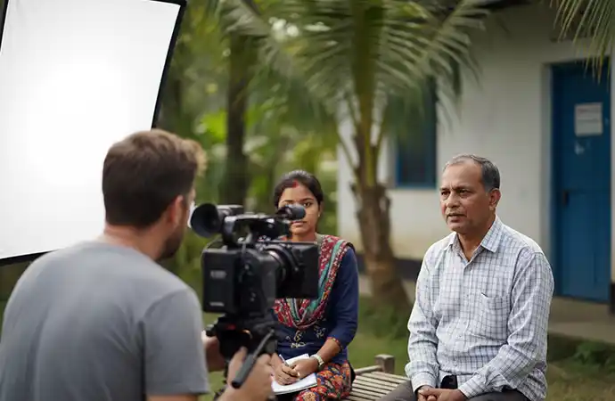

Fantastic team. They took ownership of the project. As a result, they gave very good creative inputs to improve the ad. They also tried hard to reduce the project cost... Read Ehtesham Ahmed's Full ReviewRead More
Film Fixer in Sylhet for International Productions
Sylhet in northeast Bangladesh occupies a unique position in international production — simultaneously one of the country's most visually distinctive landscapes and one of its most personally significant for a specific international audience. The rolling hills of Srimangal's tea estates, the flooded inland sea of the haor wetlands, the otherworldly stillness of Ratargul Swamp Forest and the clear river landscape of Bichanakandi at the India border together form a visual world unlike anywhere else in Bangladesh.
For the majority of British Bangladeshis — whose families trace their origins to the Sylhet region — this landscape carries a personal and cultural weight that makes it the subject of documentary, memoir and journalistic content produced specifically for UK broadcast and independent distribution audiences.
Libanza Films provides professional film fixer services in Sylhet for international documentary filmmakers, broadcast journalists, NGO communications teams, UK diaspora productions and commercial directors. We manage permits, tea estate access negotiations, Forest Department clearances, haor wetland logistics, local crew and every element of production coordination — so your team can focus entirely on the story Sylhet has to tell.
- Tea estate access negotiation with individual Srimangal estate management
- Ratargul Swamp Forest permit and full boat-based logistics
- Haor wetland production support across flood and dry seasons
- UK Bangladeshi diaspora production experience and cultural understanding
- Local Sylhet crew, transport and accommodation coordination

Led on the Ground by Azizul Hoque Shiplu, Founder and Film Director
Sylhet productions Libanza Films supports are overseen by Azizul Hoque Shiplu, Founder and Film Director, with over two decades in advertising and film production and direct personal oversight of more than 100 advertising and audiovisual projects, including relationship-dependent access environments such as private tea estates and Forest Department-permitted locations. He began his career at Ogilvy and Mather and holds a diploma in filmmaking from the Zahir Raihan Film Institute. Read Azizul's full profile
Why International Productions Film in Sylhet
Sylhet offers content categories that no other Bangladesh region can provide — and that international productions travel specifically to access:
- Tea estate visual world: Bangladesh's tea-growing region is concentrated in the Sylhet hills. The estates — immaculately maintained rows of tea under shade trees, pickers moving through the rows in the morning light, the processing factories and drying sheds — are among the most photographed and least overcrowded filming environments in South Asia. Unlike some of Bangladesh's more demanding access environments, the right estate relationships make this genuinely accessible.
- Climate and flooding landscapes: The haor wetland basin of Sunamganj floods every year between April and October, transforming thousands of square kilometres of agricultural land into a shallow inland sea dotted with villages on raised earth islands. This seasonal transformation — and the communities that live through it — is among the most visually arresting climate stories in Bangladesh and remains dramatically under-filmed by international productions.
- Unique natural environments: Ratargul Swamp Forest — Bangladesh's only freshwater swamp forest, accessible only by boat — and Lawachara National Park, home to western hoolock gibbons and exceptional birdlife, provide wildlife and natural environment content available nowhere else in the country.
- Diaspora and cultural story access: Sylhet is the ancestral homeland of the vast majority of the estimated 600,000-strong British Bangladeshi community. The cultural connections between Sylhet and the UK — in both directions — are the subject of ongoing documentary, journalistic and personal film work by UK broadcasters, independent directors and community filmmakers.
- India border landscape: Jaflong and Bichanakandi sit at the Bangladesh–India border where the Dawki River crosses — extraordinarily clear water flowing over boulders and flat stone beneath the Meghalaya hills. Visually unique, relatively accessible and increasingly sought after by international productions looking for natural beauty content beyond Bangladesh's better-known coastal environments.
Key Filming Locations in Sylhet and What They Require
Srimangal Tea Estates
Bangladesh's tea capital is two hours south of Sylhet city, in a landscape of low rolling hills covered in the bright green of manicured tea gardens under shade trees. Individual estates vary significantly in their visual character — some are vast commercial operations, others smaller and more intimate — and in how welcoming they are to film crews.
Access requires direct negotiation with each estate's management. There is no general filming permit for tea estate interiors — each property is privately owned and sets its own terms. Libanza Films identifies appropriate estates for your specific content requirements and manages the full access arrangement.
Best season: October to May for clearest skies and
most active picking. June to September offers dramatic monsoon light
but wetter conditions.
Lead time: 3 to 4 weeks.
Ratargul Swamp Forest
Bangladesh's only freshwater swamp forest — a flooded woodland where trees rise directly from dark, still water, accessible entirely by narrow wooden boat through channels barely wider than the vessel. In the flood season, the forest floor is submerged to several metres depth and the forest canopy creates an enclosed green world unlike any other environment in Bangladesh.
A Bangladesh Forest Department permit is required. All logistics inside the forest are by boat — Libanza Films arranges local boatmen, coordinates permit applications and manages the timing of access around tidal and weather windows.
Best season: June to October for full flood depth
and most dramatic visual character. November to April when water
levels are lower but forest remains visually distinctive.
Lead time: 4 to 6 weeks for Forest Department permit.
Haor Wetlands — Tanguar Haor and Sunamganj
The haor basin is a natural bowl-shaped depression that fills with floodwater every year between April and October — expanding to cover thousands of square kilometres in a shallow inland sea. Fishing boats replace tractors. Villages become islands. The visual transformation is complete and extraordinary. Tanguar Haor specifically is a UNESCO-listed Ramsar wetland of international importance — a wintering ground for migratory birds and one of the most biodiverse freshwater ecosystems in South Asia.
Haor productions require careful seasonal planning and boat-based logistics throughout. Community access is best arranged through local NGO or union parishad liaison — Libanza Films manages this as part of our pre-production coordination. Tanguar Haor has specific entry regulations managed by the Bangladesh government.
Best season for flood landscape: May to September.
Best season for birdlife: November to February.
Lead time: 4 to 6 weeks.
Bichanakandi and Jaflong
Where the Dawki River crosses the India–Bangladesh border, the water runs clear over flat stone outcrops and boulders beneath the dramatically rising Meghalaya hills. Bichanakandi and Jaflong — a short distance from each other near Gowainghat — offer a visual environment completely unlike the river delta Bangladesh that most international productions default to. The clear water, the stone landscape, the hill backdrop and the India border setting make this one of the country's most visually distinctive natural locations.
The river areas are accessible with standard filming permit and community coordination. Proximity to the India border requires awareness of restricted zones — Libanza Films assesses precise locations before confirming access.
Best season: October to May for clearest water.
Avoid peak monsoon for practical access.
Lead time: 3 to 4 weeks.
Lawachara National Park
A patch of semi-evergreen forest in the Moulvibazar district, Lawachara is home to the western hoolock gibbon — Bangladesh's only ape species — along with capped langurs, slow lorises, diverse reptile populations and exceptional birdlife. Immediately adjacent to Srimangal, making it naturally combinable with tea estate filming in the same production trip.
Forest Department permit required. Wildlife filming beyond standard nature tourism requires additional coordination — Libanza Films manages both the permit process and local guide arrangements for productions requiring extended wildlife access.
Best season: November to April for clearest
forest conditions and most accessible terrain.
Lead time: 3 to 5 weeks.
Sylhet City and Spiritual Landscape
Sylhet city is defined by its Sufi heritage — the Shrine of Hazrat Shah Jalal, one of the most significant pilgrimage sites in Bangladesh, draws visitors from across the country and from the global Sylheti diaspora. The adjacent Shrine of Hazrat Shah Paran and the devotional culture surrounding both sites offer religious and cultural content with significant international documentary value.
Shrine filming requires religious authority coordination — approach must be respectful and access arranged in advance through appropriate channels. Libanza Films manages this liaison as part of our Sylhet production support.
Lead time: 2 to 3 weeks for shrine access coordination.
How Much Does a Film Fixer Cost in Sylhet?
Film fixer costs in Sylhet vary by engagement type, duration, crew size and the mix of locations involved — combining tea estates, forest permits and haor wetland logistics in one trip carries more coordination cost than a single-location shoot. Based on typical international productions Libanza Films has supported here:
- Fixer-only support: USD 2,000 to 8,000 — your crew, your direction; we handle estate negotiations, permits and on-ground coordination
- Hybrid support: USD 5,000 to 15,000 — you bring a director and key crew; we supply local DP, camera, sound and production staff
- Full local production partner: USD 8,000 to 25,000+ — we execute the entire shoot on your brief, from filming through delivery
Forest Department permits, boat hire for Ratargul and the haor wetlands, and tea estate access fees are priced separately and confirmed once we have your production dates, locations and crew size — itemised, no hidden costs.
How much does a film fixer cost in Bangladesh? Full cost guide
Sylhet and the UK Bangladeshi Diaspora — A Specific Production Context

The majority of Britain's Bangladeshi community — centred in Tower Hamlets, Birmingham, Oldham and Manchester — traces its origins to the Sylhet region. This connection is the subject of continuous documentary, journalistic and personal film work from UK-based directors, broadcasters and community organisations exploring identity, migration history, intergenerational change and the relationship between Britain and Bangladesh.
Productions in this space have specific requirements that distinguish them from standard documentary or commercial work:
- Village and family community access: Productions following specific diaspora family stories require sensitive community engagement and family liaison that goes beyond standard filming permits. Libanza Films has experience with this type of personal documentary access coordination.
- Cultural and religious context awareness: Understanding the Sylheti cultural context — the significance of family hierarchy, community dynamics, religious observance and the specific sensitivities around migration narratives — is essential for productions working in this space.
- UK broadcast compliance: UK-commissioned documentary productions carry editorial and compliance standards from commissioning broadcasters. Libanza Films is familiar with working within these frameworks as a local production partner.
- Bilingual production support: Productions covering diaspora stories often involve Sylheti dialect as well as standard Bangla — Libanza Films provides translation support across both.
What Our Film Fixer Services in Sylhet Cover
Libanza Films manages every element of production coordination for international crews filming in Sylhet — from permit applications and access negotiations initiated weeks before your crew arrives, to real-time logistics management and problem-solving throughout the shoot.
- Filming permits and government clearances: Ministry of Information filming permission, Forest Department permits for Ratargul and Lawachara, Tanguar Haor entry coordination and site-specific approvals.
- Tea estate access negotiation: Direct arrangement with Srimangal estate management — identifying appropriate estates for your content and confirming access agreements.
- Media and journalist visa invitation letters: Official letters for international crew visa applications issued through Libanza Films as a registered Bangladesh entity.
- Haor wetland logistics: Seasonal planning, boat hire, community liaison and accommodation for productions filming in the flood-season haor landscape.
- Local crew provision: Cinematographers, camera assistants, sound recordists, production assistants, Bangla and Sylheti dialect translators and drivers based in or deployable to Sylhet.
- Equipment coordination: Professional camera, lighting and audio equipment transported from Dhaka for productions requiring kit beyond what they carry — confirmed availability in advance of travel.
- Transport and accommodation: Dhaka–Sylhet coordination (domestic flight approximately 45 minutes or road 5 to 6 hours), in-region vehicle and driver hire, boat arrangements for wetland and forest locations and accommodation appropriate to crew size and base location.
- On-ground fixer presence: A Libanza Films representative present throughout the Sylhet shoot for real-time coordination, access management and logistics.
Why International Productions Choose Libanza Films for Sylhet

Sylhet's filming environments span an unusual range — from the privately controlled tea estate world where access depends entirely on individual owner relationships, to government-managed forest reserves and remote wetland communities accessible only by boat. A production partner without specific Sylhet experience will encounter each of these as a fresh problem rather than a managed process.
- Tea estate relationships: Established connections with estate management across Srimangal that open doors to filming access that cold approaches from international crews consistently fail to secure.
- Forest and wetland permit experience: Ratargul and Lawachara Forest Department permit processing, Tanguar Haor access coordination and seasonal logistics planning for haor productions — all handled as part of our standard Sylhet production support.
- UK diaspora production experience: We understand the specific requirements of UK-commissioned productions covering the Sylhet–Britain connection — community access, cultural sensitivity and broadcaster compliance awareness included.
- Full Bangladesh coverage under one partner: Sylhet productions that combine with Dhaka, Cox's Bazar, Chittagong or the Sundarbans are coordinated without the international team managing multiple local suppliers.
Frequently Asked Questions — Film Fixer in Sylhet
Film fixer costs in Sylhet start from USD 2,000 to 8,000 for fixer-only support covering permits, estate negotiations and on-ground coordination. Hybrid support with local crew runs USD 5,000 to 15,000. Full line production starts from USD 8,000 to 25,000 and above, depending on duration, crew size and the mix of tea estate, forest and wetland locations. Forest permits, boat hire and tea estate access fees are priced separately.
Sylhet's most significant filming locations for international productions include the Srimangal tea estates, Ratargul Swamp Forest, Tanguar Haor and the Sunamganj haor wetlands, Lawachara National Park, Bichanakandi river landscape and Jaflong at the India border. Each offers visually distinct content — from rolling tea-covered hills and flooded inland sea landscapes to dense forest and clear river environments — with varying permit and access requirements.
Yes. Tea estate access in Srimangal is negotiated directly with individual estate management — there is no general filming permit covering all estates. Libanza Films manages this negotiation on behalf of international productions, identifying which estates are appropriate for the production's content requirements and arranging all necessary access agreements. Allow three to four weeks for estate access negotiation.
Yes. Ratargul Swamp Forest requires a Bangladesh Forest Department permit and all access is by boat — there are no roads into the forest. Libanza Films manages the Forest Department permit process and arranges all boat logistics. The Sunamganj haor wetlands require advance logistics planning, particularly for the flood season (April to October) when road access to many haor communities is replaced entirely by boat travel. We manage all transport, accommodation and access coordination for both locations.
Yes. Sylhet is the ancestral region of the majority of British Bangladeshis, and the area draws significant interest from UK broadcasters, independent documentary filmmakers and diaspora communities producing personal, cultural and historical content. Libanza Films supports UK-based productions with all Sylhet logistics — permits, community access, local crew, transport and accommodation — with full awareness of the specific storytelling context that diaspora-connected productions often involve.
Four to six weeks minimum for standard Sylhet productions. Productions involving Ratargul Swamp Forest should allow five to six weeks for Forest Department permit processing. Tea estate access negotiation also benefits from four to six weeks' lead time to identify appropriate estates and confirm filming arrangements. Haor wetland productions planned for the flood season (April to October) require additional logistics planning — contact us early to confirm boat availability and community access during high-water periods.
Planning to Film in Sylhet?
Tell us your production dates, the specific Sylhet locations you want to film, your crew size and what you are producing. Libanza Films will respond with a full access assessment, seasonal planning advice, production support plan and itemised cost estimate — with honest lead time guidance for every location you have in mind.
Related Guides and Services
- Filming in Bangladesh from the UK and USA: Guide for Diaspora Filmmakers (2026)
- How to Hire a Film Fixer in Bangladesh: The Complete Guide (2026)
- Filming Permits in Bangladesh: Step-by-Step Guide for Foreign Crews
- Drone Filming Permits in Bangladesh: Complete Guide (2026)
- NGO and Documentary Filming in Bangladesh: What Foreign Teams Should Know
- How Much Does It Cost to Film in Bangladesh? (2026 Guide)
- How Much Does a Film Fixer Cost in Bangladesh?
- Safety, Security and Risk Management for Filming in Bangladesh
- Film Fixer vs Production Company: What International Crews Actually Need
- Do You Really Need a Film Fixer in Bangladesh?
- International Shoot in Bangladesh: 2026 Filming Guide
- Film Fixer in Bangladesh — Full National Coverage and Pricing
- Filming Permits and Visa Guidance Bangladesh
- Documentary Production in Bangladesh
Film Fixer Coverage Across Bangladesh
Sylhet is one of five major filming regions Libanza Films covers nationally. All multi-location productions are coordinated under a single plan:
- Film Fixer in Dhaka — permits, Old Dhaka access, broadcast news and commercial productions
- Film Fixer in Cox's Bazar — RRRC Rohingya camp permits, coastal and marine filming, NGO humanitarian productions
- Film Fixer in Sundarbans — Forest Department permits, boat logistics, wildlife and climate documentary
- Film Fixer in Chittagong — ship-breaking yards, Chittagong Port, Hill Tracts access and industrial filming
- Film Fixer in Bangladesh — full national coverage, all pricing tiers, complete international client list
Customer Reviews

Very dedicated team! Apprecite their enthusiasm, creativity and passion for their work... Read Md. Jamil Hossain Chowdhury Rahat's Full ReviewRead More

Libanza specializes in creating captivating films and advertisements with compelling narratives and stunning visuals... Read Riad Full ReviewRead More
Get in Touch
Our Clients
Diverse industries, trusted partnerships. From advertising agencies to corporate entities and non-profit organizations, our clients rely on us to bring their creative visions to life. With passion, expertise, and attention to detail, we deliver exceptional video production solutions that exceed expectations. Join our esteemed clientele and experience the power of captivating storytelling with Libanza Films.